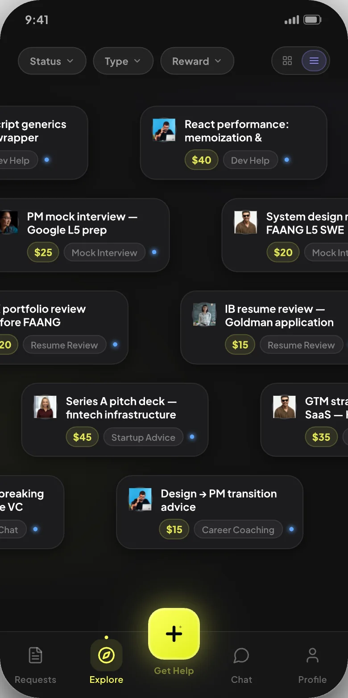
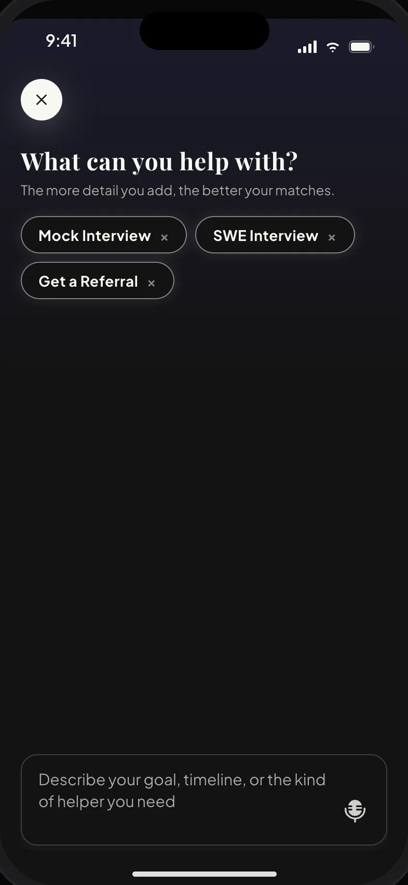

Three calls, and what each one changed.
New Goes between the four project cards and the cover image, so it is read before section 01. The three stories below become one new act after 05 Decisions. Amber means a fact I am waiting on.
I learned to bring the case, not just the idea.
- Did
- A reference, a reason it fits now, and a small study behind every proposal.
- Changed
- which proposal landed
- Took
- Direction and priority decide what gets built. How interesting an idea is does not.
The room had a favourite, so I took it to users first.
- Did
- Three rounds of my own sessions: Explore in April, the MVP in June, the mentor flow on its own.
- Changed
- Explore exists because a mentor asked for it, and the AI brief moved from writing requests to finding what they miss.
- Took
- The feature we are proudest of is not exempt from the question.
Everyone shipped with AI, so I built the place that says what is true.
- Did
- Three states on every module, an audit of the live screens, one update rule per role.
- Changed
- what it saved the team
- Took
- When production is cheap, the scarce thing is a shared source of truth.
Alternative Version A2: the same information as one band. Denser, less narrative. Pick one.
What I own
- Onboarding and first run
- Explore and daily picks
- Profile and premium
- The mentor-side AI flow
- Brand, launch, and marketing
What changed because of a call I made
Proposals that landA reference, a reason, and a small study behind each one.
Three rounds with usersFive people on the Explore concepts, nine on the MVP, the mentor flow on its own.
One source of truthThree states on every module, an audit, an update rule per role.
I learned to bring the case, not just the idea.
I used to bring ideas the way I had at school: on their own, because they were interesting. A team shipping every week reads an idea differently, so I watched how the people whose ideas moved put them.
- A referenceSomeone has shipped a version of this.
- A reason it is nowWhere it sits against this quarter.
- EvidenceEnough to show the premise holds.
- A sizeWhat the smallest version costs.
An interesting idea is not a reason to build something. In a fast team, direction and priority come first, and my job is to show where an idea sits against them.
Every time the room had a favourite, we took it to people outside the room first.
Three rounds across 2026, and I ran my own sessions in each.
Confirm You said Explore was settled by an A/B test. Your notes are two rounds of interviews. Was there also a separate A/B with numbers?
Explore · Five people, two rounds, April 2026
The stream was the exciting idea. Five people said it should not be the default.
A stream of requests drifting past, or cards you scan at your own pace.



Two directionsOne mentor and two mentees on April 21, two PhD students on April 23.
What shippedA short list that ends, with a reason on every card.
Signal 01
Novel to look at, heavy to use.
The mentor found it visually too much to work from.
Signal 02
People wanted to go back.
Both mentees read it fine. They wanted what had already gone past.
Signal 03
New ideas need an order.
Ship what explains itself, earn the trust, then open the new one.
The calm list became the default, and Explore exists because a mentor asked for it in that first round. The stream stayed on the roadmap with the sessions' own brief.
MVP on TestFlight · Nine users, June 2026
The finding I brought back put a question to our own AI.
Builds 122 to 127, nine people, five days. These are the findings from my sessions.
What I found · 01
The AI wrote well, and that was the question.
Three people said it felt about the same as what they would have written.
What I found · 02
The words carried more than the design did.
An open request said you can now chat, on a screen with no chat on it.
What I found · 03
Helpers weighed what it would cost them.
Two asked to filter by deadline or reward before taking something on.
The team's next step for the AI became a move from request writer to request strategist, with a phrasing pass across the product beside it. which of these has shipped since
Shown here as team research. Three designers ran the June study, Jasper wrote the report, and the findings above are the ones from my sessions.
Mentor AI flow · User test
The mentor side had its own question, so it got its own round.
Not which screen wins, but whether a helper trusts what comes back.



Everything asked up frontAnd a list with no reason attached.
Two taps to matchesThe AI shows its work, then gets out of the way.
What I ran
how many people, what you asked them to do, when
What came back
the finding that changed the flow
A new interaction is not a default, and the feature we are proudest of is not exempt from the question.
Everyone shipped with AI, so I built the place that says what is true.
Design, front-end and back-end were all producing with AI, and the speed was real. There was just no place that said which version was live, so I made one inside the file everybody already had open.
Confirm Rebuilt from your file rather than pasted in, so it stays readable and carries no faces. Check which module sits in which state, whether anything is in state 2 now, and whether a date means the day it was settled.
Onboarding
Home and request hub
AI flow
One colour per state, on every module in the file. Anyone can open it and see in a second what is waiting on development, what is live but still owed a review, and what is settled.
The same file without the system. Every module looks equally current, so the only way to know what is live is to ask the person who built it.
Three states, one colour
The colour sits on the module, so the whole product is readable without opening a frame.
The live screens say so
State 2 marks what is built and running, which made the audit possible. how many screens
One rule per role
A settled module carries its date, so the latest screen is something you point at.
When AI makes production cheap, the scarce thing is a shared source of truth. Designing that is design work.
Every amber slot, in one list.
Nothing here is invented. Each line is a number or an attribution I will not write until you give it to me.
- Was there an A/B as well. Your notes are two rounds of interviews, April 21 and 23. If a separate A/B ran with numbers, send it and I will add it.
- The year. April 21 and 23 of 2026, I assume, since the timeline runs to September 2026.
- Your share of the June study. How many of the nine sessions did you run?
- What shipped since June. The AI change and the phrasing pass are written as next steps, not as done. Tell me which is live.
- The five findings. I used the ones attributed to you. Say if any should come off, or if one of the others is really yours.
- The mentor sessions. How many people, what you asked them to do, when, and the finding that changed the flow.
- The board. Which module is in which state, whether anything is in state 2, and whether a date means the day it was settled.
- Story 1, the result. One proposal that landed, named plainly enough to say out loud in an interview.
- Story 3, the scale and the result. How many screens you audited, and what the team stopped losing.
- All three, when. Roughly which month each one happened.